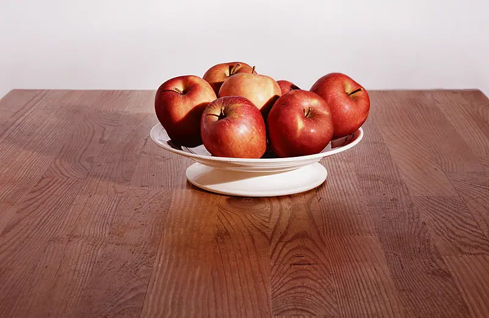
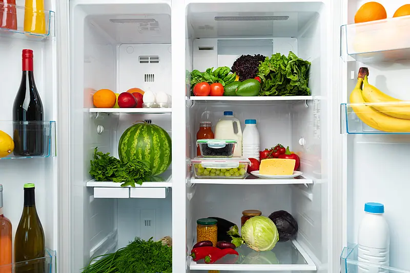
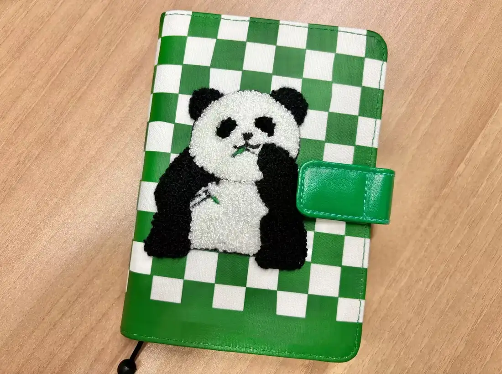

Giáo trình HSK 2 · Lesson 13我们爱上中文课
Wǒmen ài shàng Zhōngwén kè
Chúng tôi yêu thích giờ học tiếng Trung.
Mục tiêu bài khóa
Sau bài học, người học có thể diễn đạt sự khác biệt, so sánh mức độ nhỏ và sử dụng câu hai tân ngữ.
比较句说明具体差别Dùng câu so sánh để nói rõ mức chênh lệch cụ thể.
比较句说明差别很小Dùng 一点儿 để diễn đạt sự khác biệt nhỏ.
双宾语句Sử dụng các động từ như 拿、送、卖、给 với hai tân ngữ.
Khởi động · 热身
Chọn từ rồi chọn đúng hình ảnh tương ứng. Hoàn thành sáu cặp.
💡 Hãy chọn một từ trước.
Từ vựng · 生词
Mặt trước có từ, nghĩa, loại từ và nút phát/dừng. Mặt sau có hình ảnh và câu ví dụ từ PowerPoint.
新年
xīnnián
năm mới
danh từChạm vùng trống để lật thẻ
新年到了，我很开心。 🔊Xīnnián dào le, wǒ hěn kāixīn.
Năm mới đã đến, tôi rất vui. 妈妈送给我一个新年礼物。 🔊Māma sòng gěi wǒ yí ge xīnnián lǐwù.
Mẹ tặng tôi một món quà năm mới. 教
jiāo
dạy
động từChạm vùng trống để lật thẻ
老师教我们写汉字。 🔊Lǎoshī jiāo wǒmen xiě Hànzì.
Giáo viên dạy chúng tôi viết chữ Hán. 妈妈教我做饭。 🔊Māma jiāo wǒ zuòfàn.
Mẹ dạy tôi nấu ăn. 花
huā
hoa; bông hoa
danh từChạm vùng trống để lật thẻ
花园里的花真漂亮啊！ 🔊Huāyuán lǐ de huā zhēn piàoliang a!
Hoa trong vườn thật đẹp! 春天到了，花都开了。 🔊Chūntiān dào le, huā dōu kāi le.
Mùa xuân đã đến, hoa đều nở rồi. 希望
xīwàng
hy vọng; mong
động từChạm vùng trống để lật thẻ
我希望明天是个晴天。 🔊Wǒ xīwàng míngtiān shì ge qíngtiān.
Tôi hy vọng ngày mai trời nắng đẹp. 希望每个人都快乐。 🔊Xīwàng měi ge rén dōu kuàilè.
Mong mọi người đều vui vẻ. 上面
shàngmiàn
phía trên; bên trên
danh từChạm vùng trống để lật thẻ

桌子上面有一些苹果。 🔊Zhuōzi shàngmiàn yǒu yìxiē píngguǒ.
Trên bàn có một số quả táo. 椅子上面有一本书。 🔊Yǐzi shàngmiàn yǒu yì běn shū.
Trên ghế có một quyển sách. 洗手间
xǐshǒujiān
nhà vệ sinh
danh từChạm vùng trống để lật thẻ
请问洗手间在哪儿？ 🔊Qǐngwèn xǐshǒujiān zài nǎr?
Xin hỏi nhà vệ sinh ở đâu? 我去一下洗手间。 🔊Wǒ qù yíxià xǐshǒujiān.
Tôi đi nhà vệ sinh một chút. 里面
lǐmiàn
bên trong; phía trong
danh từChạm vùng trống để lật thẻ

教室里面有桌子和椅子。 🔊Jiàoshì lǐmiàn yǒu zhuōzi hé yǐzi.
Trong lớp học có bàn và ghế. 冰箱里面有什么？ 🔊Bīngxiāng lǐmiàn yǒu shénme?
Trong tủ lạnh có gì? 笔
bǐ
nét chữ; bút
lượng từ / danh từChạm vùng trống để lật thẻ
你要慢慢写每一笔。 🔊Nǐ yào mànmàn xiě měi yì bǐ.
Bạn phải viết từng nét thật chậm. “大”比“人”多一笔。 🔊“Dà” bǐ “rén” duō yì bǐ.
Chữ 大 nhiều hơn chữ 人 một nét. 可能
kěnéng
có thể; có lẽ
động từ / phó từChạm vùng trống để lật thẻ
你认识那个穿红衣服的人吗？可能认识。 🔊Nǐ rènshi nàge chuān hóng yīfu de rén ma? Kěnéng rènshi.
Bạn biết người mặc áo đỏ kia không? Có thể là biết. 现在十一点多了，他可能在睡觉。 🔊Xiànzài shíyī diǎn duō le, tā kěnéng zài shuìjiào.
Bây giờ hơn 11 giờ rồi, anh ấy có thể đang ngủ. 上网
shàngwǎng
lên mạng; truy cập internet
động từChạm vùng trống để lật thẻ
上网买东西很方便。 🔊Shàngwǎng mǎi dōngxi hěn fāngbiàn.
Mua đồ trên mạng rất tiện lợi. 弟弟很喜欢上网玩游戏。 🔊Dìdi hěn xǐhuan shàngwǎng wán yóuxì.
Em trai rất thích lên mạng chơi game. 那样
nàyàng
như thế; như vậy
đại từChạm vùng trống để lật thẻ

我知道那样不对，对不起。 🔊Wǒ zhīdào nàyàng bú duì, duìbuqǐ.
Tôi biết như vậy không đúng, xin lỗi. 我也想要一个那样的本子。 🔊Wǒ yě xiǎng yào yí ge nàyàng de běnzi.
Tôi cũng muốn một quyển vở như vậy. 告诉
gàosu
nói cho; kể cho
động từChạm vùng trống để lật thẻ
不要问了，我不会告诉你的。 🔊Bú yào wèn le, wǒ bú huì gàosu nǐ de.
Đừng hỏi nữa, tôi sẽ không nói cho bạn biết đâu. 你告诉他我在公园门口等他。 🔊Nǐ gàosu tā wǒ zài gōngyuán ménkǒu děng tā.
Bạn nói với anh ấy tôi đang đợi ở cổng công viên. 班
bān
lớp; ban
danh từChạm vùng trống để lật thẻ
我在一班，我的好朋友在二班。 🔊Wǒ zài yī bān, wǒ de hǎo péngyou zài èr bān.
Tôi học lớp 1, bạn thân của tôi học lớp 2. 我们学校一共有六个班。 🔊Wǒmen xuéxiào yígòng yǒu liù ge bān.
Trường chúng tôi tổng cộng có sáu lớp. Bài khóa · 课文
Ảnh ngữ cảnh bên trái, nội dung bên phải. Bài khóa 4 hiển thị đúng dạng đoạn nhật ký.
Tương tác đóng vai
Chọn bài khóa và nhân vật. Lời của vai đã chọn sẽ được ẩn; phần này chỉ hiển thị chữ Hán.
Củng cố từ vựng
Lật đáp án từ vựng rồi hoàn thành câu hỏi nghe đọc hiểu.
Câu hỏi đọc hiểu
Mẫu câu cần nhớ: 今天的词比昨天多了十个。这个本子贵一点儿。妈妈教我做饭。